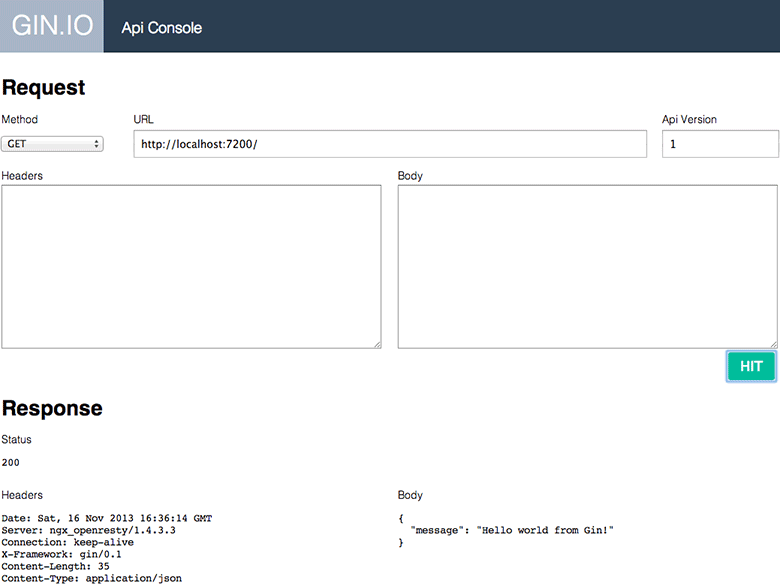

API Console
Gin comes with a handy tool to allow developers play around with their own API. This tool basically:
- takes care of adding the proper
Acceptheader, used by Gin to version the API - allows a developer to set various HTTP methods for a request
- allows a developer to specify request headers and its body
This is a screenshot of what the console looks like:

To get started:
Enable the console for your environment in your project's
config/settings.luafile:Settings.development = { code_cache = false, port = 7200, expose_api_console = true }Access the console at the address
/ginconsoleSelect your method from the select box (
GET,POST, ...)Set the full url of the server you want to play with
Set the API version
Set the request headers (if any)
Set the request body (must be a valid JSON)
Click on the
HITbutton to see the response
Please note that request headers should be specified one per line, for example:
X-Additional: header-info
X-Additional-2: header-info-2